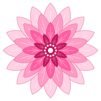

About the Creator
Karylle Lynn L. Dellosa is a third-year Data Science student who enjoys exploring her interests, learning new things, and discovering different perspectives through movies, books, and other creative experiences. Her curiosity about people, their thoughts, and the ways they express themselves inspired her to create Petal, a social media platform that encourages genuine connections and self-expression.
Designed with soft pink details and a simple, welcoming interface, Petal offers a space where users can share their thoughts, connect with others, and express themselves freely without AI interfering with their interactions.
Although Petal was created as a midterm exam for her Web Development course, it became an opportunity to bring her ideas and creativity to life. More than just a school requirement, Petal is a reminder that we are all like petals, each with our own stories, colors, and ways of blooming. We may grow at different paces and take different paths, but we all deserve the space to express ourselves and be appreciated for who we are. After all, the beauty of a flower comes not from having identical petals, but from each petal being part of something uniquely beautiful.